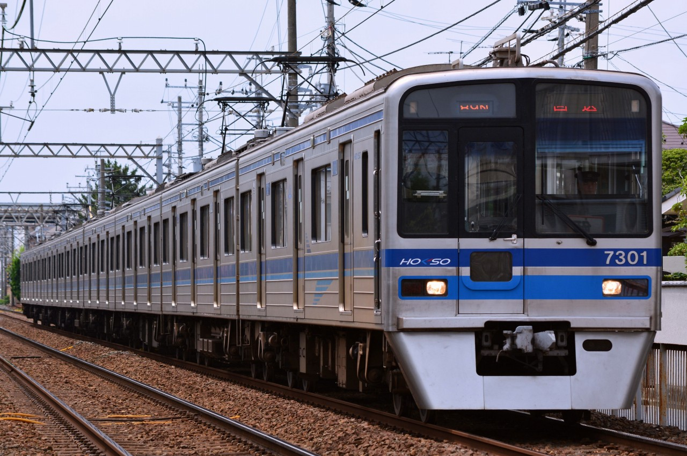
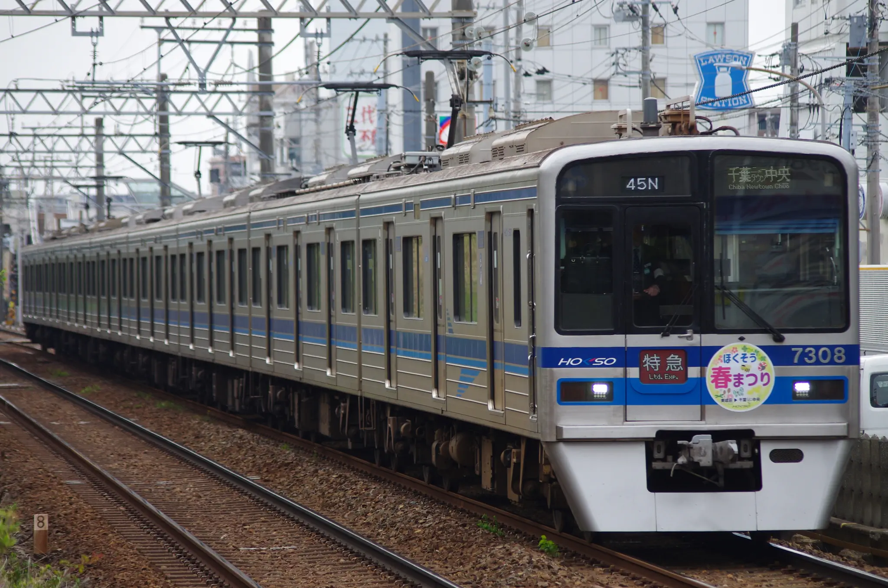
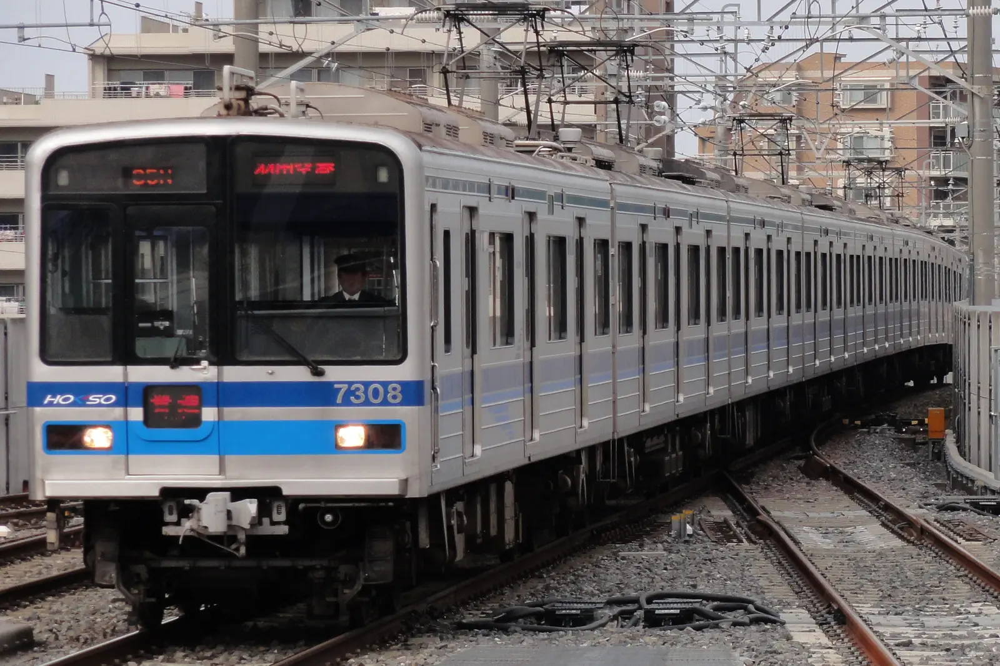
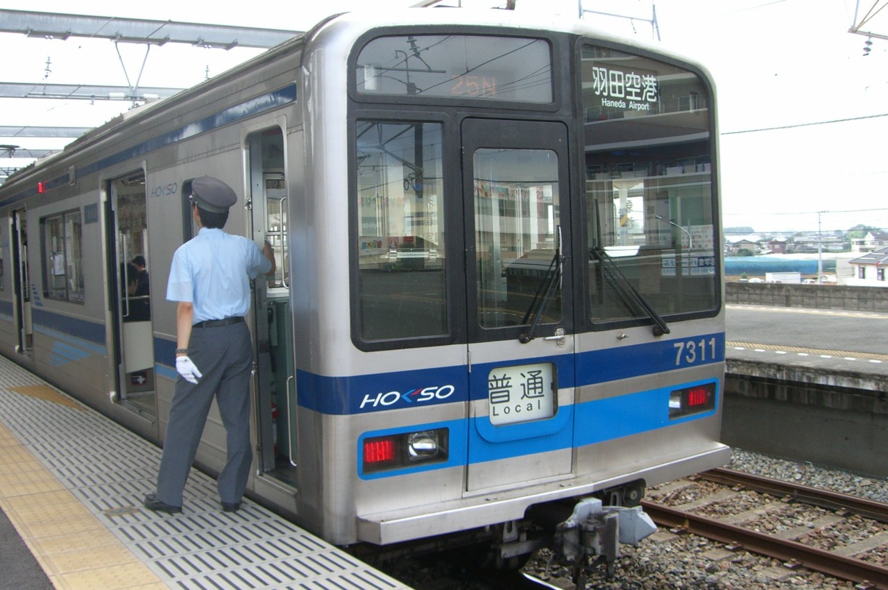
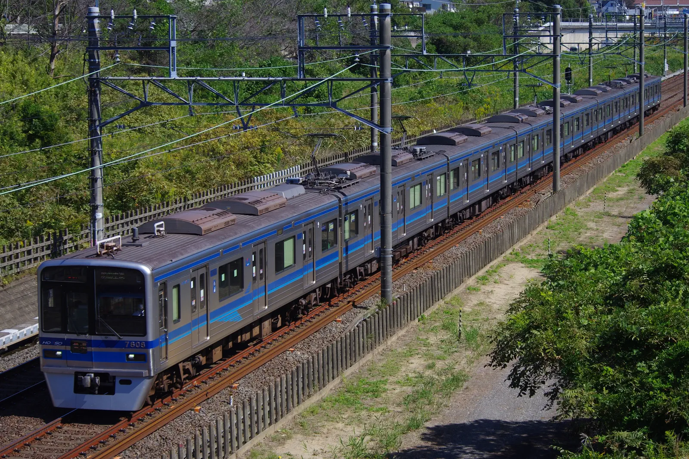
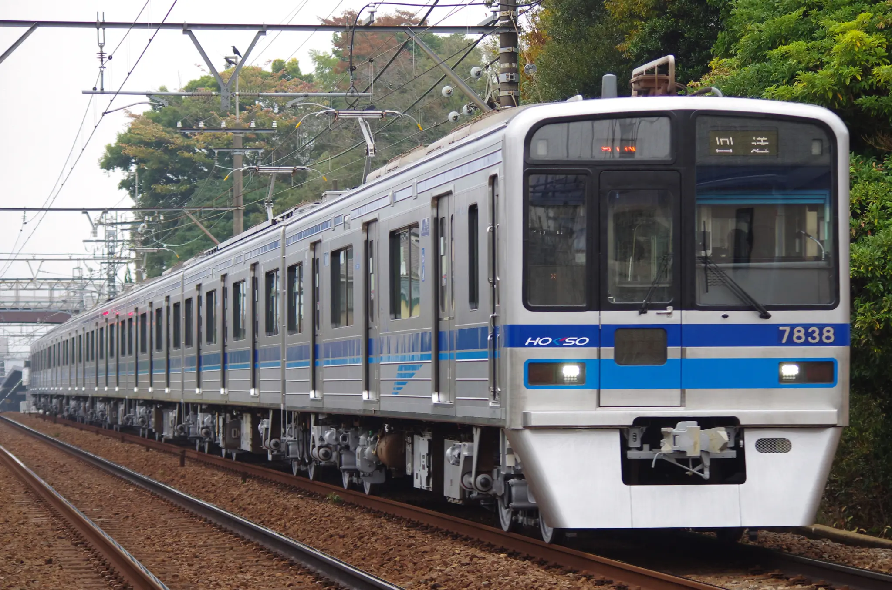

Tweet 北総鉄道7300形 1991年に運行開始。京成3700形と共通設計であり、北総鉄道では京成高砂～新鎌ヶ谷間開業に伴い2本が新造された。 生え抜き車とは別に京成3700形をリースした7808～7828編成が存在し、7800形と呼称されることもある。 7308編成 @四ツ木 (2013/09/17)  89N 7308編成 @菅野-京成八幡 (2013/06/30)  ほくそう春まつり号 7308編成 @谷津-船橋競馬場 (2024/04/21)  スカート取付け前、3色LED時代の7308編成 (2011/05/05) スカート取付け前の7318編成 @京成高砂 (2012/11/10)  幕車時代の7318編成 (2009/08/04)  7808編成 @西白井-新鎌ヶ谷 (2023/10/13)京成電鉄からのリース車。現在、北総鉄道生え抜きの7300形と大差は見られない。  91N 9808編成 (2023/11/15) Tweet